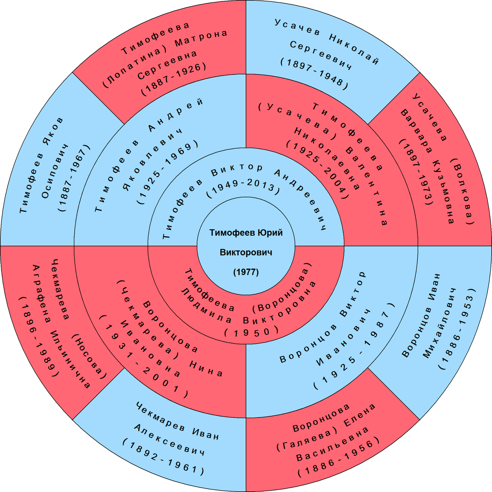

Интерактивное семейное древо
Перетаскивайте древо мышью, масштаб — колёсиком или кнопками. Клик по человеку — краткие сведения, повторный клик — полная карточка.
Хронология семьи
Ветви семьи
Круговая схема предков
Четыре поколения предков Тимофеева Юрия Викторовича. Голубым — мужчины, красным — женщины.
